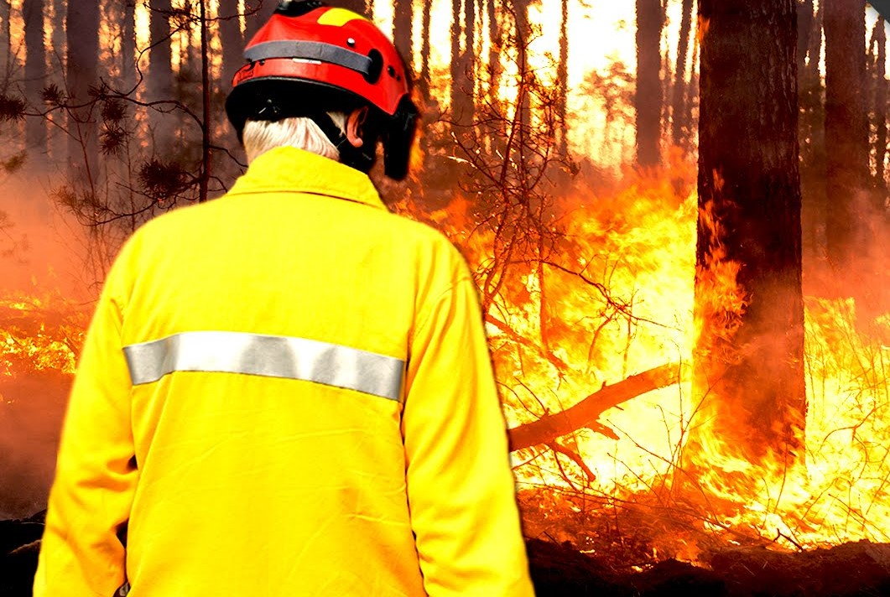

Φωτιά στη Νέα Μάκρη
Σε πλήρη εξέλιξη είναι η προσπάθεια της πυροσβεστικής να θέσει υπό πλήρη έλεγχο τη φωτιά στη Νέα Μάκρη που ξεκίνησε στις 2:17 τα ξημερώματα προκαλώντας συναγερμό στις αρχές.
Η ώρα της εκδήλωσης της πυρκαγιάς, εξάλλου, είναι αυτή που έκανε στελέχη όπως ο ΓΓ Πολιτικής Προστασίας, ο υπουργός Εσωτερικών και ο δήμαρχος Μαραθώνα να εκφράσουν υπόνοιες περί εμπρησμού.
Ακόμα πιο κατηγορηματικός ήταν ο υποστράτηγος της Πυροσβεστικής Νίκος Σπάης ο οποίος, μιλώντας στο OPEN λίγο μετά την έναρξη της φωτιάς, είπε ότι το διπλό μέτωπο που εκδηλώθηκε σε απόσταση 700 μέτρων από τη μια αρχική εστία στην άλλη «είναι καθαρά εμπρησμός. Δεν υπήρχε φωτιά ανάμεσα στα δύο μέτωπα».
Η φωτιά ξεκίνησε σε δασική έκταση στην περιοχή Λιβίσι, ενώ λίγα λεπτά μετά επεκτάθηκε και δεύτερο μέτωπο, στην περιοχή Αγία Μαρίνα.
Το δεύτερο στοιχείο που προβληματίζει τις αρχές είναι το γεγονός ότι, όπως επισήμανε στον ΘΕΜΑ 104,6 ο ΓΓ Πολιτικής Προστασίας Νίκος Χαρδαλιάς, «πρόκειται για την έβδομη πυρκαγιά σε εννέα ημέρες στην περιοχή. Δεν είναι τυχαίο γεγονός αυτό, ούτε αφορά την κλιματική αλλαγή. Βλέπω ότι επιμένουν στην περιοχή, δεν ξέρω γιατί. Χάσαμε στρέμματα πευκοδάσους αναγεννημένου». «Νομίζουμε ότι κάποιο ανθρώπινο χέρι έβαλε τη φωτιά. Το ανακριτικό της Πυροσβεστικής θα έχει δουλειά. Υπάρχουν καταγγελίες για περίεργες κινήσεις ύποπτου ατόμου» δήλωσε στον ΘΕΜΑ 104,6 ο περιφερειάρχης Αττικής Γιώργος Πατούλης.
«Εχουμε βάσιμες υποψίες για εμπρησμό γιατί ήταν δύο τα μέτωπα που ξεκίνησαν σε απόσταση 500 μέτρων» δήλωσε, επίσης, στον ΘΕΜΑ 104,6 ο δήμαρχος Μαραθώνα. Η εξέλιξη της φωτιάς
Αν και το μέτωπο, σύμφωνα με τον κ. Χαρδαλιά, είναι σε ύφεση, οι άνεμοι που επικρατούν στην περιοχή δεν επιτρέπουν στην Πυροσβεστική να εφησυχάζει όπως φαίνεται και από το γεγονός ότι λίγο πριν τις 9 υπήρξε ενημέρωση για ενίσχυση των δυνάμεων.
Στην περιοχή επιχειρούν 138 πυροσβέστες, 44 οχήματα, 4 αεροσκάφη και 5 ελικόπτερα. Αναλυτικά οι επίγειες δυνάμεις: 43 πυροσβέστες με 21 οχήματα, 46 πυροσβέστες με 23 οχήματα από το ΜΕΤΠΕ και 7 ομάδες πεζοπόρου τμήματος με 49 πυροσβέστες. Συνδράμουν υδροφόρες της Περιφέρειας και των ΟΤΑ, μηχανήματα έργου, εθελοντές πυροσβέστες με εθελοντικά οχήματα και η ΕΛΑΣ.
Για σχετικό link πατήστε εδώ